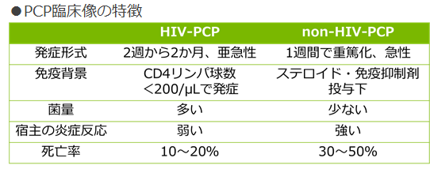

PCP（ニューモシスチス肺炎）
RA患者PCPの特徴
⇒HIV-PCPとは病態が異なる
急速に発症し、強い酸素化障害を伴う
菌量が少ない割に炎症が強い
免疫不全の状態で発症するとは限らない

リスク因子
高齢者、既存の肺疾患（慢性間質性肺炎（リウマチ肺）、肺気腫など）、ステロイド薬服薬
診断
確定診断：呼吸器分泌物からPneumocystisを証明
補助診断：両肺びまん性のすりガラス陰影、血清β-D-グルカン高値、PCRによるPneumocystis DNA検出
鑑別診断：間質性肺炎や気道病変、MTX肺炎などの非感染性呼吸器合併症との鑑別に留意
治療
第1選択としてST 合剤（2～3週間が目安）。第2選択としては、ペンタミジンやアトバコン。
予防
ハイリスク患者背景（高齢者、ステロイド薬併用、既存肺病変）へのST合剤投与